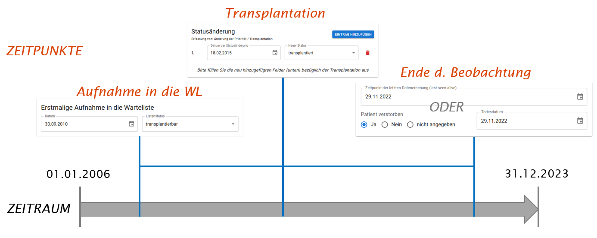
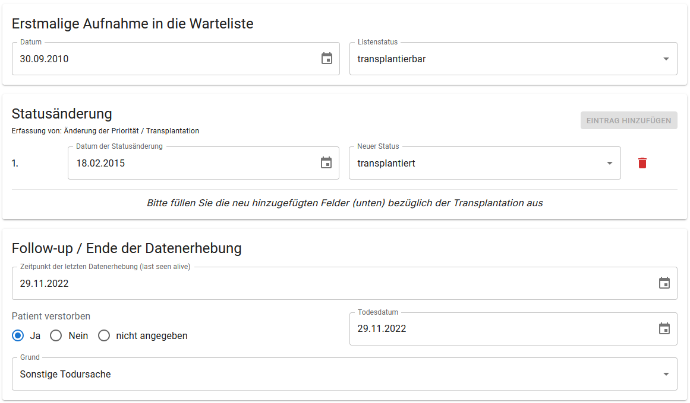

Zeitraum, -punkt, -fenster

Zeitraum
Der Zeitraum bezieht sich auf den gesamten Beobachtungszeitraum des CAS-Projektes, vom 01.01.2006 bis 31.12.2023.
Zeitpunkte
Die 3 Zeitpunkte beziehen sich auf die Zeitpunkte der Datenerhebung eines Patienten. Diese werden im eCRF ganzen oben abgefragt. Die obrige Grafik würde im eCRF wie folgt eingegeben werden:

Bitte geben Sie entweder “Zeitpunkt der letzten Datenerhebung (last seen alive)” ODER “Patient verstorben” ein.
- Listung
Beginn der Datenerhebung eines:r Patient:in ist mit dem Beginn der “erstmaligen” Aufnahme in die Warteliste.
Eine erneute Aufnahme in die Warteliste nach einer erfolgten Transplantation ist auch eine erstmalige Aufnahme in die Warteliste. Damit beginnt auch die Datenerhebung des:r Patient:in erneut. Weitere Informationen hierzu finden Sie unter dem Reiter “Episoden”.
Variablen die sich auf den Zeitpunkt der Listung beziehen sind in der Dateneingabemaske links angeordnet.
Statusänderung
Änderungen des Statuses auf der Warteliste werden in dem Feld “Statusänderung” eingetragen. In diesem Feld wird auch der 2. Zeitpunkt “Transplantation” eingetragen. Durch Klicken auf “Eintrag hinzufügen” kann eine Änderungen eintragen werden. Die folgenden Änderungen können ausgewählt werden:

- Transplantation
Eine Transplantation markiert einen weiteren wichtigen Zeitpunkt der Datenerhebung.
Diesen Zeitpunkt gibt es nicht für jede:n Patient:in.
Variablen die sich auf den Zeitpunkt der Transplantation beziehen sind in der Dateneingabemaske rechts angeordnet.
- Ende der Beobachtung
Der Zeitraum der Beobachtung eines:r Patient:in kann auf 3 Arten enden:
Zeitpunkt der letzen Datenerhebung (last seen alive): der letzte Dokumentierte Zeitpunkt an dem bekannt ist, der Patient lebt,
Patient verstorben,
Ende des Beobachtungszeitraums des CAS-Projektes: in diesem Fall bitte unter Zeitpunkt der letzen Datenerhebung 31.12.2023 eintragen.
Die Zuordnung der Variablen zu den Zeitpunkten finden Sie unter dem Reiter “Variablen”.
Zeitfenster
Die Zeitfenster umfassen die festgelegten Zeitpunkte (siehe oben). Da nicht immer alle Informationen zu einem bestimmten Zeitpunkt (z. B. am Tag der Listung) vorliegen, gibt es Zeitfenster. Diese definieren den zeitlichen Rahmen, in dem Informationen dem jeweiligen Zeitpunkt zugeordnet werden können. Falls mehrere Informationen für dieselbe Variable im gleichen Zeitfenster vorliegen, sollte die Information ausgewählt und in die Eingabemaske eingetragen werden, die dem entsprechenden Zeitpunkt am nächsten liegt.
| Zeitpunkt | vor d. Zeitpunkt | nach d. Zeitpunkt |
|---|---|---|
|
4 Wochen | 1 Woche |
|
4 Wochen | - |
|
- | - |